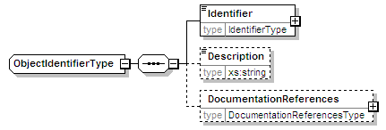
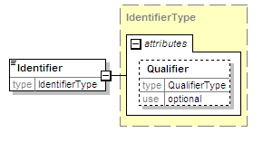
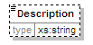
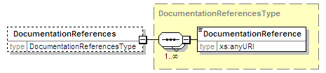

| diagram |  | ||
| namespace | urn:oasis:names:tc:evs:schema:eml:ts | ||
| children | Identifier Description DocumentationReferences | ||
| used by |
|
||
| source | <xs:complexType name="ObjectIdentifierType"> <xs:sequence> <xs:element name="Identifier" type="IdentifierType"/> <xs:element name="Description" type="xs:string" minOccurs="0"/> <xs:element name="DocumentationReferences" type="DocumentationReferencesType" minOccurs="0"/> </xs:sequence> </xs:complexType> |
| diagram |  | ||||||||||||
| namespace | urn:oasis:names:tc:evs:schema:eml:ts | ||||||||||||
| type | IdentifierType | ||||||||||||
| properties |
|
||||||||||||
| attributes |
|
||||||||||||
| source | <xs:element name="Identifier" type="IdentifierType"/> |
| diagram |  | ||||||||
| namespace | urn:oasis:names:tc:evs:schema:eml:ts | ||||||||
| type | xs:string | ||||||||
| properties |
|
||||||||
| source | <xs:element name="Description" type="xs:string" minOccurs="0"/> |
| diagram |  | ||||||||
| namespace | urn:oasis:names:tc:evs:schema:eml:ts | ||||||||
| type | DocumentationReferencesType | ||||||||
| properties |
|
||||||||
| children | DocumentationReference | ||||||||
| source | <xs:element name="DocumentationReferences" type="DocumentationReferencesType" minOccurs="0"/> |